Generated 2026-06-19T19:29:13 · Motive_QC 0.6.0
Input: /Users/drorhazan/Desktop/gaga_psilo/projects/3Layers_project/Layer1_motive_qc/motive_qc/data/671/671_T1_P1_R1_Take 2026-01-06 03.57.12 PM_001.csv
frame (preferred) or time_s.
Full mask: tables/qc_mask.csv ·
Intervals: tables/qc_mask_intervals.csv
| start_s | end_s | duration_s | criterion | affected_markers |
|---|---|---|---|---|
| 45.5583 | 48.8 | 3.2417 | gaps_over_0p5 | 671:LShoulderTop;BackLeft__LShoulderBack;BackRight__RShoulderBack;BackTop__WaistCBack |
| 10.6333 | 12.7583 | 2.125 | gaps_over_0p5 | 671:ChestTop;671:WaistLFront;RHandIn__RHandOut |
| 101.15 | 102.3917 | 1.2417 | gaps_over_0p5 | 671:RHandIn;BackLeft__LShoulderBack |
| 126.6083 | 127.2417 | 0.6333 | gaps_over_0p5 | 671:LHandIn |
| 136.675 | 137.275 | 0.6 | gaps_over_0p5 | 671:LFArm;671:RFArm |
| 120.1417 | 120.6083 | 0.4667 | gaps_over_0p5 | 671:LFArm;671:LHandIn;671:RHandIn |
| 12.9583 | 13.4167 | 0.4583 | gaps_over_0p5 | 671:ChestTop |
| 156.9667 | 157.3 | 0.3333 | gaps_over_0p5 | 671:LElbowOut;671:RHandIn |
| 156.6333 | 156.9583 | 0.325 | gaps_over_0p5 | 671:ChestLow;671:ChestTop;671:LElbowOut;671:LFArm;671:LHandIn;671:RFArm;671:RHandIn |
| 138.675 | 138.9833 | 0.3083 | gaps_over_0p5 | 671:ChestLow;671:RFArm |
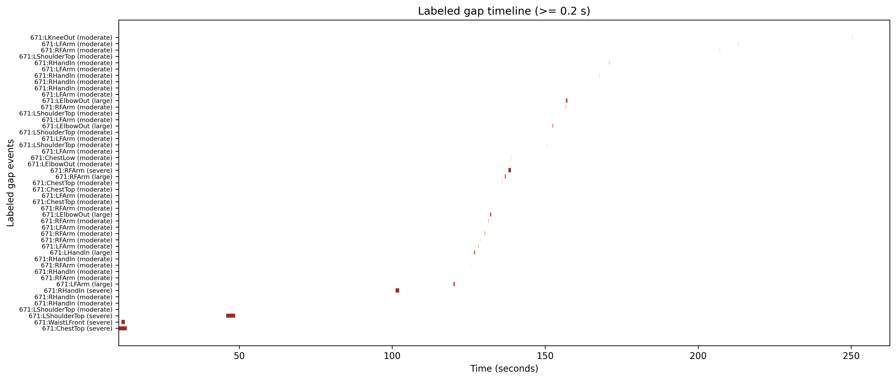
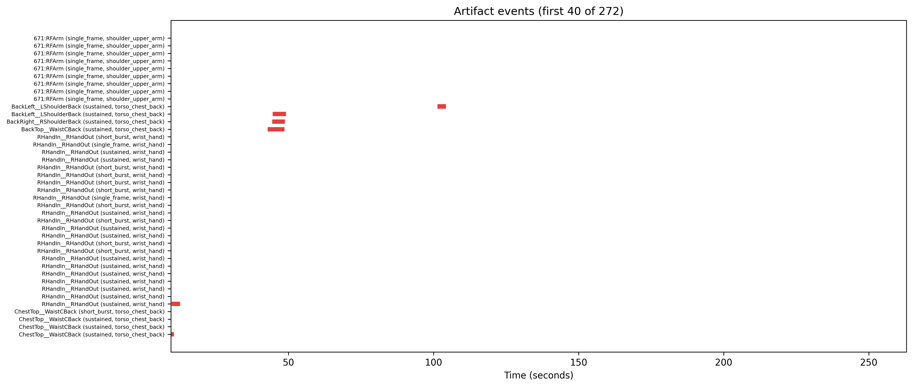
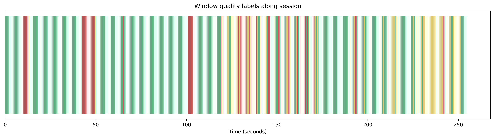
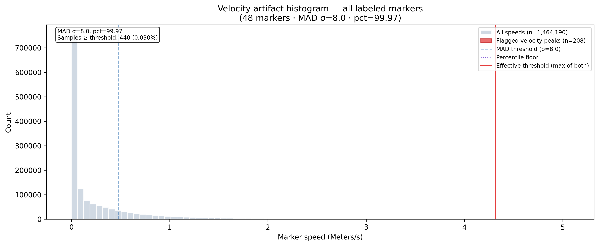
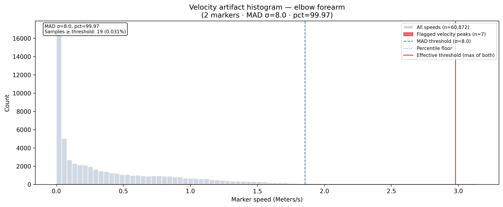
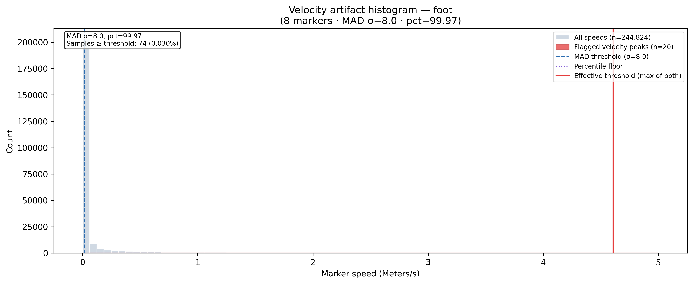
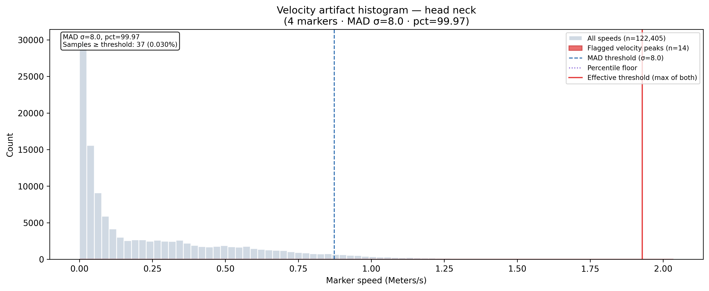
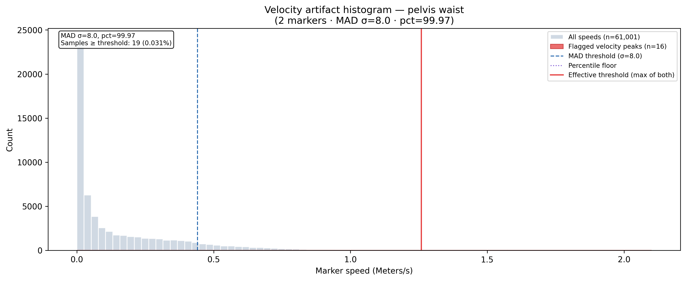
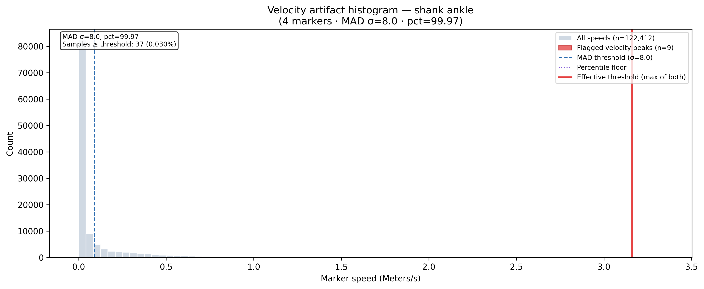
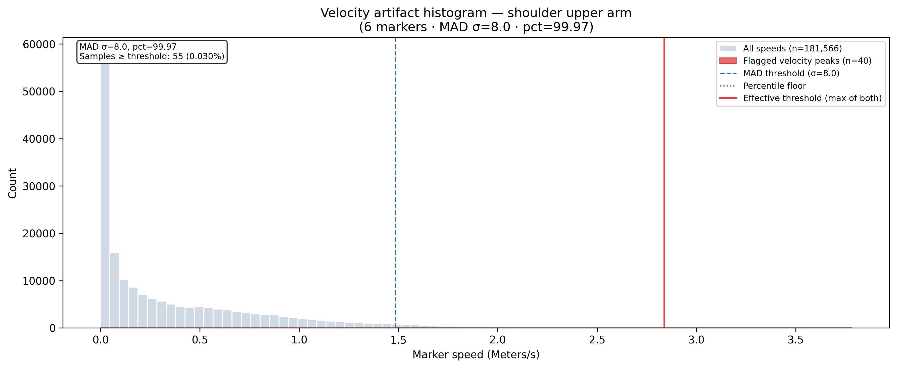
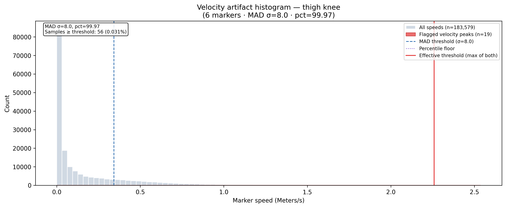
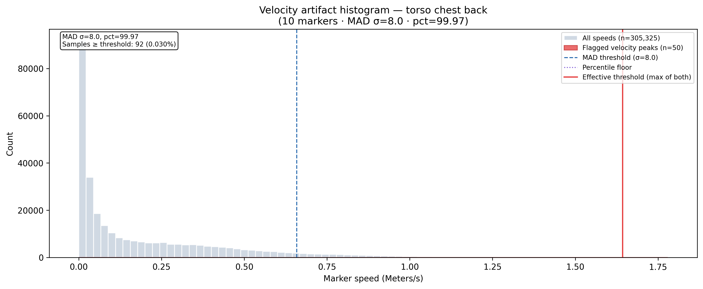
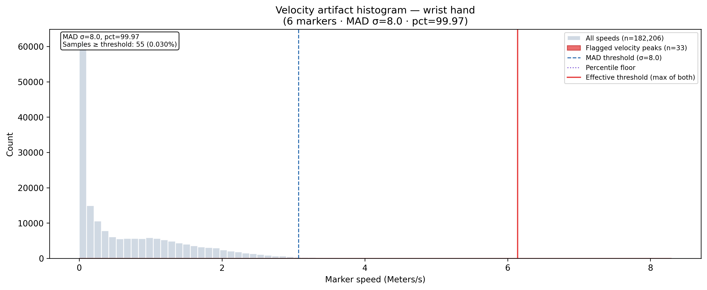
See qc_report.md and layer1_segmentation_notebook_manifest.json for full details.